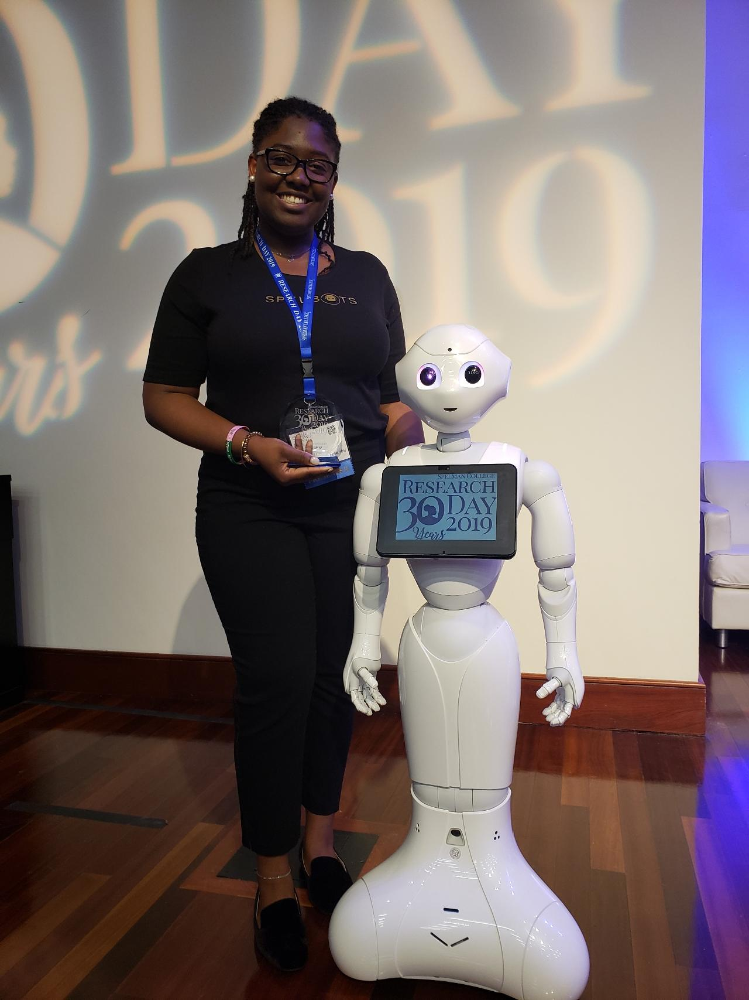
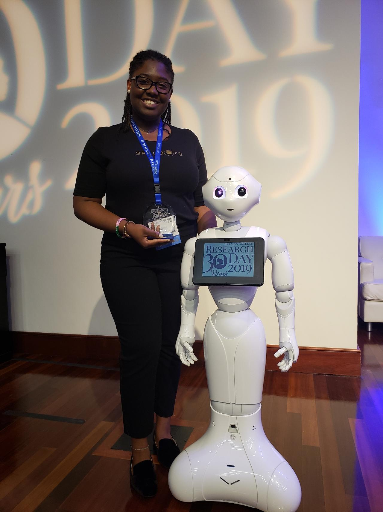

Education
University of Illinois at Urbana-Champaign, 06/2020
Ph.D. in Computer Science
Spelman College, 08/2016 - 05/2020
B.S. Computer Science
Publications
Margie Ruffin, Jaye Nias, Kayla Taylor, Gabrielle Singleton, and Amber Sylvain. 2020. Character Development
to Facilitate Retention in a Storytelling Robot. In 2020 ACM Southeast Conference (ACMSE 2020), April 2–4,
2020, Tampa, FL, USA. ACM, New York, NY, USA, 4 pages. https://doi.org/10.1145/3374135.3385315
PDF
Jaye Nias and Margie Ruffin. 2020. CultureBot: A Culturally Relevant Humanoid Robotic Dialogue Agent. In 2020 ACM
Southeast Conference (ACMSE 2020), April 2–4, 2020, Tampa, FL, USA. ACM, New York, NY, USA, 4 pages.
https://doi.org/10.1145/3374135.3385306
PDF
Honors and Awards
- Alfred P. Sloan Scholar | 2020 – 2025
- Grainger College of Engineering SURGE Fellowship | 2020 – 2025
- UIUC Graduate College Fellowship | 2020 – 2025
- College Dean’s List |2017 – 2020
- Spelman College Research Day, 1st place |2019
- Upsilon Pi Epsilon Honor Society Inductee | 2019
Research Experience
University of Illinois at Urbana-Champaign | Advisors Gang Wang & Kirill Levchenko -- Champaign, IL – Research Assistant
JUNE 2020 – PRESENT
- Created a tool and framework to automatically determine if an image manipulation was for benign or malicious intent.
- Conducted a user study to understand user perceptions towards manipulated media.
Georgia Tech Research Institute | Advisors Michael Brown and Brian Schultz -- Atlanta, GA – Student Researcher
OCTOBER 2019 – MAY 2020
- Worked with GTRI Researchers on assigned projects; including one that creates a tool to exploit, study, assess known vulnerabilities in HTTP/2.
Spelman College | Advisor Dr. Raquel Hill -- Atlanta, GA - Student Researcher
SEPTEMBER 2019 – MAY 2020
- Worked under a Spelman College professor to conduct research that tracks the type and amount of personal information that is being leaked from mobile applications to third-party websites.
Spelman College | Advisor Dr. Jaye Nias -- Atlanta, GA - SpelBots Team Research Leader
JANUARY 2019 – MAY 2020
- Lead a research team in building an interactive storytelling program that measures 2nd grade comprehension and retention of a story delivered by a NAO robot.
- Contributed by assisting the team in the program building, curating the background research, and compiling all of the elements of the project into a cohesive research day poster and presentation.
Spelman College | Advisor Dr. Jaye Nias -- Atlanta, GA - Clair Booth Luce Research Fellow
SEPTEMBER 2018 – MAY 2020
- Worked to develop a robotics program that measured the effectiveness of Robotic code switching, the language switching between Standard English and African American Vernacular English.
- Created five different conversation paths that related anywhere from the topic of computer science to life at Spelman College as a student.

 
